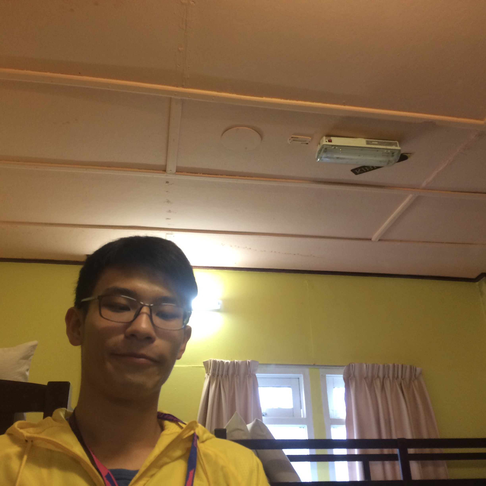

Life Summary
我出生在中国广州。我长大后梦想成为一名宇航员。但不幸的是我近视了，然后我决定成为一名科学家。至今我都在拼尽全力接近我的梦想。
2017年毕业于广州市第四中学。
Miao Miao Miao
Album
Career Experience
HEPA 过滤装置的回收
项目负责人
2018 - 至今
当我第一次使用HEPA过滤器时，我对过滤器的性能印象深刻。它不仅可以过滤可见颗粒，而且能够将颗粒吸收到0.3-0.1um之间。这意味着病毒也可能陷入过滤器。
此外价格令人印象深刻，仅3个A4尺寸的过滤器，价格超过300RMB（约50美元）。所以我想出了一个想法来清理奥得河上的过滤器以节省使用这种高性能过滤器的价格。
Achievements :
暂时没有成就，但这仍然是一个正在运行的项目（2019年6月13日）。但是，通过我们的计划我们将有两篇文章和一项专利技术，如下。
- 研究回收HEPA过滤器
- HEPA过滤器清洁参考
- 专利：HEPA过滤器清洗剂
运用技能：
- 无机化学
- 有机化学
- 分析化学
- 仪器分析化学
- HTML/SASS
专业文章/论文翻译（化学）
吉林大学
2017 - 至今
由于我的“不是更差”的英语技能。我被非正式聘请作为我们学校应用化学学院的专业翻译。值得一提的是，我几乎完成了一半以上的翻译工作。有些时候甚至递交上去的初稿就被论文机构收纳。
Achievements
ID: ICREMI 130 Title: Study on the stirred blade mounting height-to-liquid level-ratio related to the law of flow field inside the stirred reactor
尴尬的事情是我没有放置我的文件，所以我失去了我的大部分作品:-( 我希望我回到学校时能找到它们。运用技能:
- 无机化学
- 有机化学
- 热力学
- 专业英语
- HTML/SASS
学校辩论队队长
队长
2017.9 - 2017.11
我在很短的时间内担任了我们学院的辩论组长。我的领导生涯只有2个月，虽然也未能为我们的团队赢得任何名声。但是短暂的职业生涯教给我一个如何操作团队的教训。
Achievements
校内比赛二等奖运用技能:
- 团队合作
- 时间管理
生物小队(省级)
高中
2015 - 2016
带领我们的小队获得我省的二等奖。学会开始一个项目我们自己如何操作一个小团队。
运用技能:
- 团队合作
- 无机化学
- 有机化学
- 生物
技能 & 技术
学科
-
无机化学
-
有机化学
-
分析化学
-
仪器分析化学
-
HTML/CSS/SASS/LESS
内在
-
团队管理
-
时间管理
-
-
其他
- Code Review
- 极客
- 做实验
- 古典音乐
- 弹钢琴
- 贝斯
- 拍版
教育程度
-
理科学生广州市第四中学2014 - 2017
-
应用化学吉林大学珠海学院2017 - 2021
奖项
-
Award Name LoremAward not updated
-
Award Name IpsumAward not updated
使用语言
- 英文 (母语)
- 广东话 (母语)
- 普通话 (专业)
- 西班牙语 (业余)
- 汕头话 (业余)
兴趣
- 古典音乐
- 冒险
- 烹饪
- 电子游戏
- 赛博文化